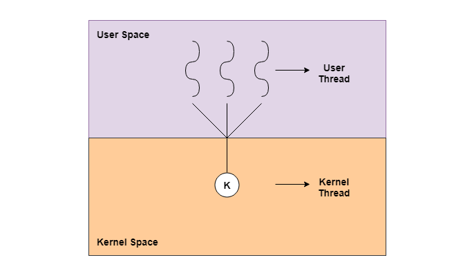

原文: user-level-threads-and-kernel-level-threads [Alex Onsman] - 10th Oct, 2018
前言
原文由作者Alex Onsman于2018-10-10发表在Tutorialspoint上，是对一个题为User-level threads and Kernel-level threads的问题的回答。
原文翻译
线程(Thread)是一个可以被调度者独立管理的轻量级进程。它可以通过并行(Parallelism)的方式来提升应用(Application)的性能。
一个线程像数据段(Data Segment)、代码段文件(Code Segment Files)一样，和与其同级的线程共享信息，然而它拥有自己的寄存器(Registers)、栈(Stack)和计数器(Counter)等等。
线程的两个主要类别可以分为：用户级线程 和 内核级线程。如下图所示：

用户级线程(User-Level Threads)
用户级线程是由用户实现的，系统内核(Kernel)无法意识到它们的存在。对于系统内核来说，用户级线程就像一个单线程的进程一样。用户级线程比内核级线程更轻量(small)并且更快速(faster)，它由程序计数器(Program Counter, PC)、栈(Stack)、寄存器(Registers)和一个小的进程控制块(A Small Process Control Block)表示。并且，用户级线程间的同步(Synchronization)不会牵涉到内核。
用户级线程的优点：
- 用户级线程的创建比内核级线程更加容易和快速，并且更易于管理；
- 用户级线程可以在任何操作系统上运行；
- 用户级线程间的切换不会涉及到内核态的权限；
用户级线程的缺点：
- 用户级线程实现的多线程应用无法利用处理器的多个核心；
- 如果一个用户级线程被阻塞住，那么整个进程就将会阻塞住；
内核级线程(Kernel-Level Threads)
内核级线程直接由内核进行使用和管理。整个进程以及其中线程的上下文信息也由内核进行管理。因此，内核级线程相比之下要慢于用户级线程。
内核级线程的优点：
- 同一个进程的多个内核级线程可以被不同的处理器核心调度；
- 内核例程(Kernel Routines)同样可以是多线程的；
- 如果一个内核级线程产生了阻塞，同一个进程中的其他线程仍然可以被内核调度；
内核级线程的缺点：
- 进程中的线程切换需要切换到内核态；
- 内核级线程的创建和管理相较于用户级线程更慢；
原文
A thread is a lightweight process that can be managed independently by a scheduler. It improves the application performance using parallelism.
A thread shares information like data segment, code segment files etc. with its peer threads while it contains its own registers, stack, counter etc.
The two main types of threads are user-level threads and kernel-level threads. A diagram that demonstrates these is as follows:
User - Level Threads
The user-level threads are implemented by users and the kernel is not aware of the existence of these threads. It handles them as if they were single-threaded processes. User-level threads are small and much faster than kernel level threads. They are represented by a program counter(PC), stack, registers and a small process control block. Also, there is no kernel involvement in synchronization for user-level threads.
Advantages of User-Level Threads
Some of the advantages of user-level threads are as follows:
- User-level threads are easier and faster to create than kernel-level threads. They can also be more easily managed.
- User-level threads can be run on any operating system.
- There are no kernel mode privileges required for thread switching in user-level threads.
Disadvantages of User-Level Threads
Some of the disadvantages of user-level threads are as follows:
- Multithreaded applications in user-level threads cannot use multiprocessing to their advantage.
- The entire process is blocked if one user-level thread performs blocking operation.
Kernel-Level Threads
Kernel-level threads are handled by the operating system directly and the thread management is done by the kernel. The context information for the process as well as the process threads is all managed by the kernel. Because of this, kernel-level threads are slower than user-level threads.
Advantages of Kernel-Level Threads
Some of the advantages of kernel-level threads are as follows:
- Multiple threads of the same process can be scheduled on different processors in kernel-level threads.
- The kernel routines can also be multithreaded.
- If a kernel-level thread is blocked, another thread of the same process can be scheduled by the kernel.
Disadvantages of Kernel-Level Threads
Some of the disadvantages of kernel-level threads are as follows:
- A mode switch to kernel mode is required to transfer control from one thread to another in a process.
- Kernel-level threads are slower to create as well as manage as compared to user-level threads.